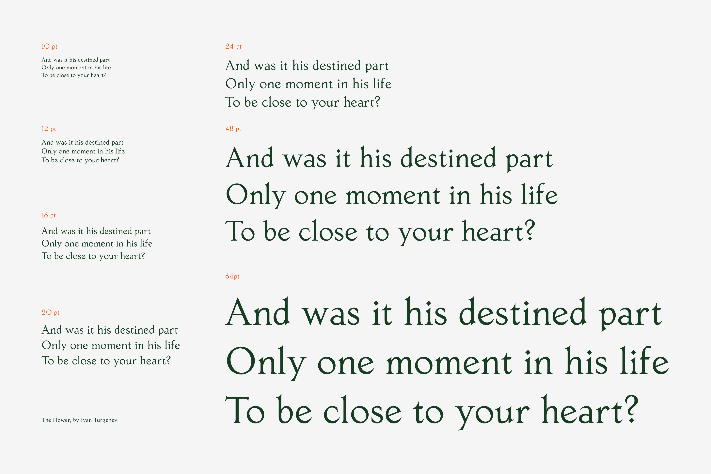
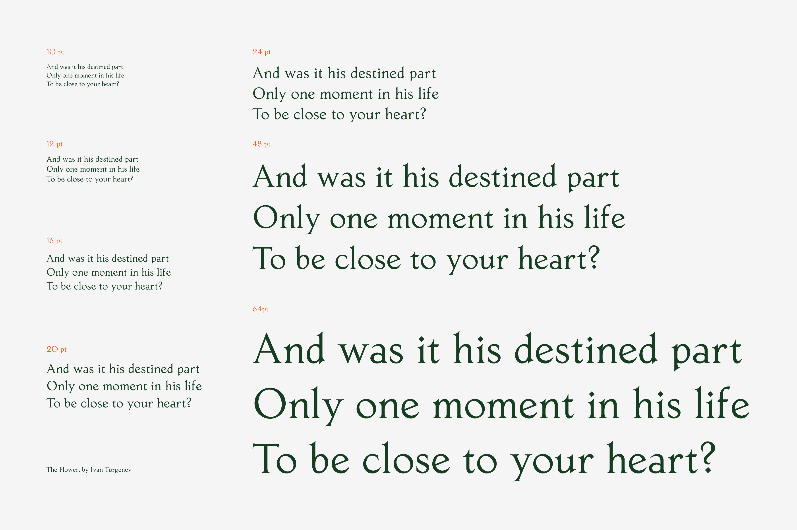

Jest
Maggie Pan
Jest is a revival of Jost-Medieval, a typeface originally designed by Heinrich Jost and printed in 1928. While the typeface’s origins lie in classical and stoic Roman forms, Jost-Medieval is imbued with warmth and playfulness from the slight swelling of the stems, the subtle curves of the serifs, letters on slants, and baby descenders. These calligraphic elements and design choices magnify the un-seriousness of a once-serious text. Hence the revival’s name: Jest.
Maggie is a product designer based in Brooklyn, New York. This is her first jab at digitizing a typeface! She also dabbles in photography and ceramics.
 
